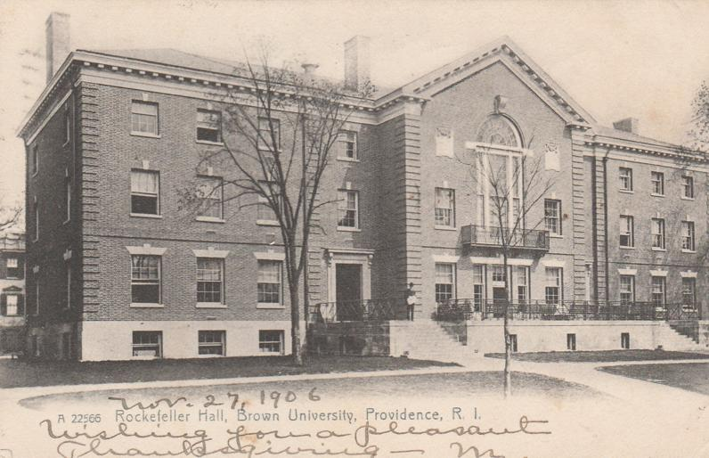

The Call of Cthulhu
By H.P. Lovecraft
“Of such great powers or beings there may be conceivably a survival . . . a survival of a hugely remote period when. . . consciousness was manifested, perhaps, in shapes and forms long since withdrawn before the tide of advancing humanity. . . forms of which poetry and legend alone have caught a flying memory and called them gods, monsters, mythical beings of all sorts and kinds. . . .”
—Algernon Blackwood
The most merciful thing in the world, I think, is the inability of the human mind to correlate all its contents. We live on a placid island of ignorance in the midst of black seas of infinity, and it was not meant that we should voyage far. The sciences, each straining in its own direction, have hitherto harmed us little; but some day the piecing together of dissociated knowledge will open up such terrifying vistas of reality, and of our frightful position therein, that we shall either go mad from the revelation or flee from the deadly light into the peace and safety of a new dark age.
Theosophists have guessed at the awesome grandeur of the cosmic cycle wherein our world and human race form transient incidents. They have hinted at strange survivals in terms which would freeze the blood if not masked by a bland optimism. But it is not from them that there came the single glimpse of forbidden aeons which chills me when I think of it and maddens me when I dream of it. That glimpse, like all dread glimpses of truth, flashed out from an accidental piecing together of separated things—in this case an old newspaper item and the notes of a dead professor. I hope that no one else will accomplish this piecing out; certainly, if I live, I shall never knowingly supply a link in so hideous a chain. I think that the professor, too, intended to keep silent regarding the part he knew, and that he would have destroyed his notes had not sudden death seized him.

My knowledge of the thing began in the winter of 1926–27 with the death of my grand-uncle George Gammell Angell, Professor Emeritus of Semitic Languages in Brown University, Providence, Rhode Island. Professor Angell was widely known as an authority on ancient inscriptions, and had frequently been resorted to by the heads of prominent museums; so that his passing at the age of ninety-two may be recalled by many. Locally, interest was intensified by the obscurity of the cause of death. The professor had been stricken whilst returning from the Newport boat; falling suddenly, as witnesses said, after having been jostled by a nautical-looking negro who had come from one of the queer dark courts on the precipitous hillside which formed a short cut from the waterfront to the deceased’s home in Williams Street. Physicians were unable to find any visible disorder, but concluded after perplexed debate that some obscure lesion of the heart, induced by the brisk ascent of so steep a hill by so elderly a man, was responsible for the end. At the time I saw no reason to dissent from this dictum, but latterly I am inclined to wonder—and more than wonder.
As my grand-uncle’s heir and executor, for he died a childless widower, I was expected to go over his papers with some thoroughness; and for that purpose moved his entire set of files and boxes to my quarters in Boston. Much of the material which I correlated will be later published by the American Archaeological Society, but there was one box which I found exceedingly puzzling, and which I felt much averse from shewing to other eyes. It had been locked, and I did not find the key till it occurred to me to examine the personal ring which the professor carried always in his pocket. Then indeed I succeeded in opening it, but when I did so seemed only to be confronted by a greater and more closely locked barrier. For what could be the meaning of the queer clay bas-relief and the disjointed jottings, ramblings, and cuttings which I found? Had my uncle, in his latter years, become credulous of the most superficial impostures? I resolved to search out the eccentric sculptor responsible for this apparent disturbance of an old man’s peace of mind.
The bas-relief was a rough rectangle less than an inch thick and about five by six inches in area; obviously of modern origin. Its designs, however, were far from modern in atmosphere and suggestion; for although the vagaries of cubism and futurism are many and wild, they do not often reproduce that cryptic regularity which lurks in prehistoric writing. And writing of some kind the bulk of these designs seemed certainly to be; though my memory, despite much familiarity with the papers and collections of my uncle, failed in any way to identify this particular species, or even to hint at its remotest affiliations.
Above these apparent hieroglyphics was a figure of evidently pictorial intent, though its impressionistic execution forbade a very clear idea of its nature. It seemed to be a sort of monster, or symbol representing a monster, of a form which only a diseased fancy could conceive. If I say that my somewhat extravagant imagination yielded simultaneous pictures of an octopus, a dragon, and a human caricature, I shall not be unfaithful to the spirit of the thing. A pulpy, tentacled head surmounted a grotesque and scaly body with rudimentary wings; but it was the general outline of the whole which made it most shockingly frightful. Behind the figure was a vague suggestion of a Cyclopean architectural background.